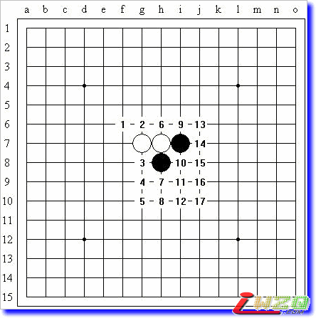
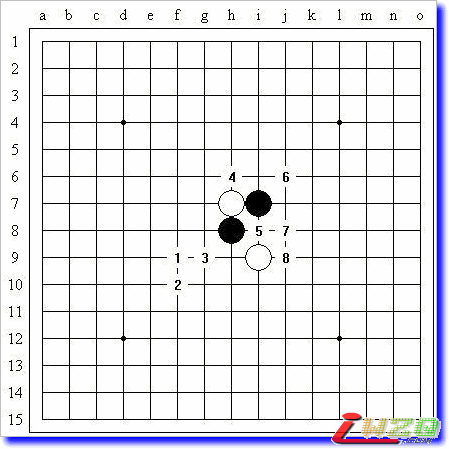

山口规则花月局简析
#1 山口规则花月局简析作者：有志青年 发表时间：2008-8-25 13:50:31
【原文地址：http://hi.baidu.com/%C6%C1%B1%CE/blog/item/23fe3fa4089d65f19152ee1d.html】
这篇文章本来是我给自己做的一个Renlib的简评，还是半成品，专门为了新规则的花月战而准备的。可惜由于临时改变计划，花月战没有去成，这个东西也就暂时搁置了。明天我就回学校了，趁着今天有一点时间，把这个完善一下，发出来给大家分享了。
一、山口规则简析
山口规则：
1、第一位棋手下前三手棋（RIF标准规则规定的26种开局之一），同时提议五手打点的数目；
2、第二位棋手决定是交换还是保持执白；
3、下第5手时，黑方必须提供第一位棋手在开局时所提议的数目的五手打点；
4、白方从中选择一点，并下第6手棋；
5、按RIF标准规则继续（黑棋有禁手）。
我没有仔细研究过这个规则的一些性质，但就我看来还是增加了不少有趣的变化。尤其是当对局双方有意无意地进入未知局面时，从我的经验来看，很少会出现开局速胜的情况，多半可以进入中盘的搏杀。
山口规则和RIF规则本质区别，在于规定五手打点的数目，也就是要求在各个不同的白4下找出第一个平衡点的序号，这些序号的最小值就是比较合适的一个打点数；特别地，如果所有白4形成的局面下这个平衡点序号之后的那个选点依然为平衡的话，这个打点数还可以依次递增，最终确定的合理打点数是一个范围，在这个范围内保证黑白双方在一个可以接受的局面下开始对弈（考试局当然另当别论）。我随便举个例子，不针对任何开局：（胜负对于黑棋而言）
打点序号 白4（1） 白4（2） 白4（3） 白4（4） 白4（5） 白4（6）
1 胜 胜 胜 胜 胜 胜
2 胜 胜 平平 胜 胜
3 平 平 平 平 平 平
4 负 平 平 负 平 平
5 负 负 平 负 平 负
6 负 负 负 负 平 负
参见上表，我希望大家能够理解我的意思：在白4（3）和白4（4）的第二打点出现了平衡局面（广义的，双方可战就行，下同），在白4（1）和白4（4）的第四打点出现了必败局面。因此合理的打点数不小于2，小于4，即2或3。细细分析：如果选择1个打点，则假后方必定交换，白4无论如何走，黑棋都可以选择必胜点，这于假先方当然不好（因为交换过了），身为打点选择方的假先方当然不会这样做出于自己不利的事情；如果选择2个打点，不论是否交换，白棋都可以走白4（3）或白4（4），保证黑棋至少走出一个平衡点，双方可战；选择三个打点的话就什么都不用考虑了；选择4个或以上打点的话，假后方必定不换，然后走白4（1）或白4（4），这样黑棋必定至少打出一个必败点，假先方同样不会这么做的。
以上分析适用于所有局面。
讽刺的是，在大大丰富了变化的同时，这个规则好像提高了五子棋入门的水准，初学者首要的任务是要记住如此多的白4应对中众多黑5的基本结论，而不仅仅是以前所需要的2个（以至少保证自己不会选择较弱的一方）。
另一个比较正常的事实是，白4不能走得太弱，否则黑棋很容易选择更多的必胜点。
有一个重点请大家注意！一旦某个白4第一个败点出现的序号比另一个白4第一个平衡点出现的序号还要小的话（这意味着必然在某个白4下竟然选不出一个平衡点），这个局面在山口规则下是无法取得平衡的！假先方选择此开局必须慎重！因此山口规则下（应该）同样有着像RIF规则下花月、浦月、云月等难以运用在实战中的开局。
二、花月局简析
在前几天做完第一次分析时，我更加倾向于在花月局中执黑，现在也依然如此。一方面是由于花月局两个黑子的布置方式威力巨大，白棋难以加以有效地控制，无论如何黑棋都更有机会取得至少是平衡的局面，这样的话当然要把未知的选择打点的权利握在自己手中；另一方面是由于我了解众多相通局面的基本结论，可以非常轻松地保证自己不会选择必败的打点。
虽然由于打点数的不同，局面的优劣不能一概而论，但总体上我认为只要打点数不是过多，花月局在山口规则下应该是黑优开局。
三、花月局打点详细分析
为了保证分析的客观性，我选择的都是已有的结论。包括有些点是未知结论，也是因为前人研究过或棋谱上所记载的“未知结论”，并非毫无根据地不给出结论。
限于个人水
#2 Re:山口规则花月局简析作者：有志青年 发表时间：2008-8-25 13:52:31
1：胜 2：胜 3：胜 4：未知 5：败 6：败 7：胜 8：胜 9：胜 10：懒得改了，这个没有分析

1：平 2：胜 3：胜 4：胜 5：胜 6：胜 7：胜 8：胜 9：胜 10：胜 11：平 12：胜 13：胜 14：白稍优 15：胜 16：白优 17：白优

1：胜 2：胜 3：胜 4：胜 5：胜 6：胜
1：胜 2：胜 3：胜 4：胜 5：白优 6：白优
1：胜 2：平 3：胜 4：胜 5：平 6：胜 7：胜 临时补充一下：i9胜
1：黑大优 2：未知 3：未知 4：未知 5：败 6：胜 7：胜 8：败 9：胜
1：黑优 2：白优 3：胜 4：胜 5：平 6：胜 7：胜 8：黑稍优
1：败 2：胜 3：胜 4：胜 5：胜
四、结论
关于山口规则下的花月局，我认为5~7个打点是比较合理的选择。当然，这个结论并不是从上面的分析直接得出的，毕竟还有很多没有考虑过的点，但从第四至第七幅图特别是那些未知的很有前途的点来分析，或许这个数目并不算多。
中国连珠网还没有发表昨天比赛的结果。我想，参考一下实战的对局也是很有意义的，有助于确定一个更加合适的打点数目。
#3 Re:山口规则花月局简析作者：越狱行辕 发表时间：2008-8-25 18:48:35
晕啊 规则真复杂#4 Re:山口规则花月局简析作者：化雨 发表时间：2008-8-26 10:24:48
太复杂了！ 这不适合普及啊#5 Re:山口规则花月局简析作者：屏蔽 发表时间：2008-8-26 12:38:56
其实我认为这个规则在开局阶段做得已经很简单了。
复杂的是两点：一是我上面的分析，其实分析过了，理解了，也就简单了。第二点就是要记住所有开局所有白4的所有五手的优劣，这个太恶心了……像我或者其他棋手，下RIF有了一段时间，对所有开局都有了自己的评价、理解以及举一反三的能力，才能“分析”出各打点的优劣，否则就真的要硬记了。
#6 Re:山口规则花月局简析作者：其怪 发表时间：2008-9-11 14:38:44
嗯，挺好的，支持一下#7 Re:山口规则花月局简析作者：风铃 发表时间：2009-1-11 20:51:51
行棋至白4的时候已经决定是否交换，此时白方选择的白4自然是：黑胜（及平衡）的5手打点最少的一个白4。由此可看出假先方提出的打点数不会高于这个4下的“平衡点数”。也既是：任何开棋，假先方提出的打点数必不能大于此开棋下所有白4中“平衡点数”最小的一个白4下的平衡点，否则将吃亏；或者蔑视对手。
对于假后方，若不知道某开棋的所有白4应对的基本打点顺序则很危险：如假先方开出花月并指定3个打点。假后方若不交换则必败，交换而不知道打点的话，打出个必败或者就算是平衡点就很吃亏了。
#8 Re:山口规则花月局简析作者：连珠小小鸟 发表时间：2009-3-8 19:18:17
不是太懂，复制下来好好研究研究一下#9 Re:山口规则花月局简析作者：伍之游 发表时间：2009-10-27 16:55:14
楼主的分析挺仔细的，对下山口规则会有用的。
建议此贴移至“山口”专栏。
#10 Re:山口规则花月局简析作者：小帮帮 发表时间：2010-1-1 21:10:37
还是蛮好玩的，棋力到一定程度的时候，山口是必然，打点也不算难